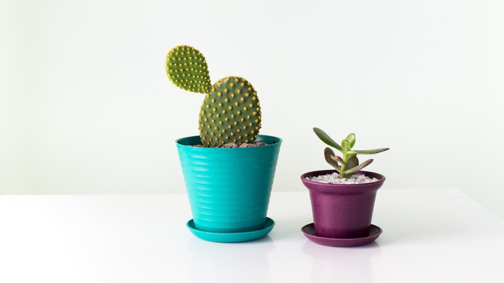

Somos una pequeña empresa familiar
Dedicada a la producción y comercialización de plantas de diferentes tipos, tambien a la confección y desinfección de jardines desde 2007. Contamos con un salón de ventas de aproximadamente 8.000 mt2 y 40.000 mt2 con plantas disponibles en tierra, las que pueden ser reservadas de una temporada para otra. Uno de los productos que son más capaces de cambiar por completo el aspecto o ambiente de una estancia son sin duda las plantas naturales. Cuando colocas una planta en una habitación, ésta cambia por completo, adquiere un aire distinto, más fresco y natural. Además, la planta será capaz de renovar el aire y el oxígeno de la habitación. Por otro lado, estas plantas también las puedes colocar en tu jardín y terraza ya sea simplemente para decorar, o porque te gusta la jardinería. Por todo ello, en Fiore Deco cultivamos una gran variedad de plantas naturales. En donde podrás encontrar desde plantas más pequeñas como aloe vera, hasta plantas más grandes como árboles frutales. Además, contamos con plantas capaces de sobrevivir sin necesidad de regarse, como pueden ser las plantas de aire o las plantas que sobreviven con la humedad que ellas mismas llegan a generar. En general, una cuidada selección de plantas naturales que irá ampliándose poco a poco y que irá cambiando en función de la temporada. Una vez tengas claro que planta te gusta más, lo único que tienes que hacer es añadirla al carrito y completar el sencillo proceso de compra. Cuando nuestro equipo reciba tu pedido, se encargará de prepararlo y enviarlo para que en tan solo unos pocos días tengas tu nueva planta natural en casa.
